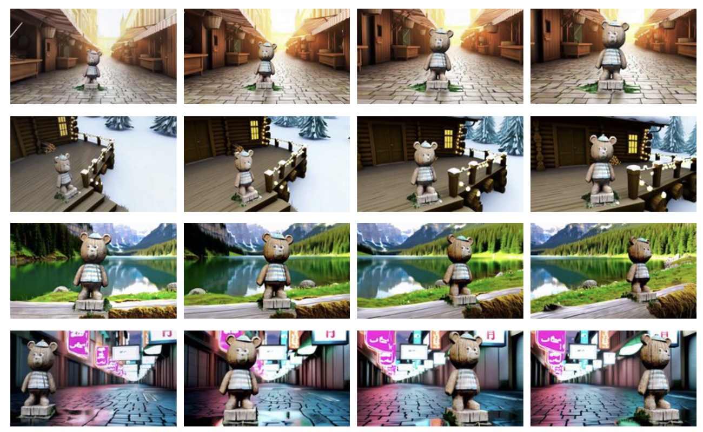
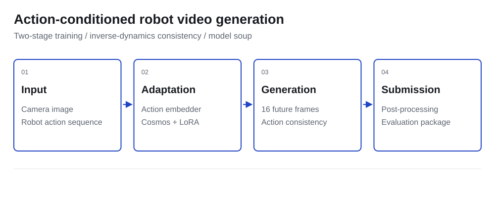
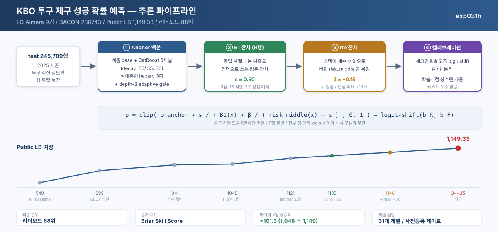
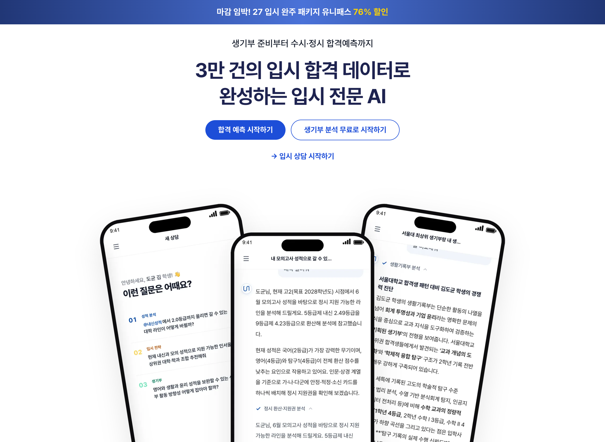
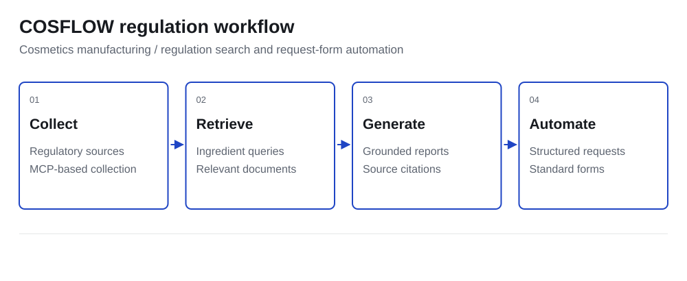
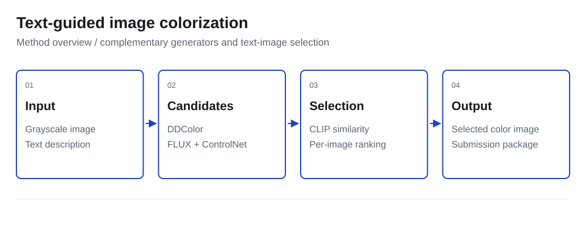

KAIST AI
Research Intern, DAVIAN Lab
Generative video and 3D-consistent subject modeling.
I am a senior undergraduate student in the Department of Artificial Intelligence at Inha University, currently working as a research intern at DAVIAN Lab, Kim Jaechul Graduate School of AI, KAIST, advised by Professor Jaegul Choo.
My research interests lie in Generative Models, Multimodal Learning, and World Models.
I have also developed retrieval-grounded AI services as a co-founding member and AI researcher at Uniroad and UPFLOW.
Research Intern, DAVIAN Lab
Generative video and 3D-consistent subject modeling.
AI Training & Hackathon
Completed Phase I and II; led the pitch-control prediction project.
Co-founding Member / AI Researcher
Admissions data and Agentic RAG counseling.
Co-founding Member / AI Researcher
Retrieval-grounded regulation search and workflow automation.
Undergraduate Researcher
Training-free subject-driven image editing.
2026

ICLR 2027, under review
Co-first author / DAVIAN Lab, KAIST
TL;DR: 3D-grounded data synthesis and geometric conditioning enable subject-consistent video generation across changing viewpoints.
Robot World Model AI Challenge, graduate track
Inter Campus AI Challenge 2026
Incheon Inter-University Startup Competition
Text-Guided Colorization AI Challenge, undergraduate track
Incheon Inter-University Startup Competition, preliminary round
MOONG Inter-University IT Hackathon
Launch Pad Startup Competition
GDG Ideathon & Demo Day
Academic Excellence, 1st in the AI department
Academic Excellence Scholarship

2026 / Team leader
Predicting future robot video from an image and an action sequence, using action-conditioned adaptation and an inverse-dynamics consistency objective.
Top Excellence Award, graduate track (2nd place)

2026 / Team leader
Predicting KBO pitch-control success with historical features, tree ensembles and segment-wise probability calibration.
LG Aimers 9th / Leaderboard 88th

2026 / Co-founding Member / AI Researcher
Developed an Agentic RAG admissions counseling service that connects admissions documents with student context and cites supporting sources.
Admissions data and AI counseling engine

2025 / Co-founding Member / AI Researcher
Built regulation search and report generation for cosmetics teams using MCP-based collection and RAG, with structured request-form automation.
Progressed to a paid pilot

2025 / Team leader
Colorized grayscale images from text by generating DDColor and FLUX candidates and selecting each image with CLIP similarity.
Undergraduate Excellence Award, BK21 Director’s Award
Vice President / Jun 2025 — Jun 2026
Organized society learning programs and led the Computer Vision and RAG/Agent study groups, from curriculum planning to technical sessions and implementation practice.
Smart Semiconductor Academy / ADsP / Business Insight micro-major